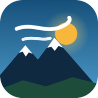

Viriato Méteo
Recorrido de ejemplo
Guardar para usar sin cobertura
Ajustes
Recorrido
Cargar GPX…
Mis rutas
✕
Guardar
Compartir
Fecha
Salida
Ritmo
(min/km)
Tiempo previsto
(h:mm:ss)
Calcular
Mapa
Calles 3D
Claro
Oscuro
Satélite
Topográfico
Dónde estoy
—
Viento en la dirección de carrera (km/h)
−20 a favor
0
+20 de cara
▶
Cámara con el corredor
Viento cuando pasas
Viento en este instante
Suelta el GPX
Compartir ruta
Quien abra este enlace verá la ruta con su previsión actualizada, desde el móvil o el ordenador.
WhatsApp
Copiar enlace
Cerrar